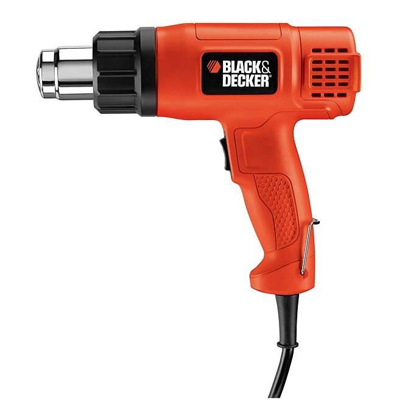

BACK HOME
various text blocks i wrote or found funny
Tactical Tarantula - me
The Tactical Tarantula is a technique in which a spider is used to cause fear in an opponent.
An example of the use of this tactic can be found in the movie Home Alone, in which the protagonist, Kevin McCallister, uses a tarantula, which he inadvertently freed earlier in the movie, as a weapon against the burglars Marv and Harry.
black and decker heat gun - discord i think

This is a Black & Decker dual temperature Heat Gun. It can output air at 750F or 1000F. It uses only 1350W at 120V, and if that’s not enough power to dry your hair, you may consider using it to strip paint, as that is what it was intended for.
year thing - me
but what if years were 364 days plus a leap week every 7 years plus a leap week every 28 years except on multiples of 700 except on multiples of 2800
SPINNING BACON - youtube comments (i don't think the video was even spinning bacon)
I am currently crying so hard right now. This is seriously the most beautiful, well put together story ever. I can’t believe how magical it was 1:12. That part truly made me shed a tear. And especially at 6:34 that part was just so truly heart touching words can not describe the series of emotions I felt. I absolutely loved the climax it had insanely excellent detail. Oh and we can’t forget the conclusion. The conclusion was the greatest and saddest conclusion I have ever seen better than any of the books I have read. Thank you so much for creating this absolute masterpiece. This is essentially the most important masterpiece of film history. It is a tragedy that this, it can’t be called a film, but a transcendent emotional experience, will be inaccessible for most. It beautifully encapsulates the human struggle to its basics; suffering, pleasure, faith, despair. It connects with the characters within the viewers, individuals suppressed within our own subconscious. It stays vibrant, fresh, and revolutionizes the art of storytelling and filmmaking while making a damn of statement on what it means to be human. Entertaining, gripping, and simply exhilarating. This might be the most impactful piece of art I’ve come across in my life, and I’m definitely coming back to it in the near future to study it more deeply. this is an absolute masterpiece, I was brought to tears listening to this and seeing the bacon go whirly swirly in a circle countless times. it absolutely moved my soul, and I don't think I can ever be the same. this bacon has changed my entire mental state, I am now at peace with who I am and what I will be doing later in my life. i have forgiven all my enemies and now I am a man of a pacifist life. I will move on, gotta move on, as the song says. the bacon is so inspirational, it shares it vast wisdom with all of us, and we are all so lucky that it would bestow it's great words with us. we are all children on bacon. hail bacon. hail bacon. The spinning bacon, rotating in one direction with this music... This made me tear up. How could such a bacon do such a thing? I'm struck by awe by this masterpiece. Especially when the bacon spins, showing its lightly salt covered tan skin. I can hear the crunch just from here, and so as the beautiful sound of the bacon scraping the dark, smooth velvet floor. The flavor, music and everything can be heard, tasted, seen and felt from a screen. You can really hear the breaths between the music artist, empathizing her love for this rotating bacon. Truly what I call modern art. This was the most legendary performance by any piece of bacon I have ever watched. The acting was top tier and very life changing. This is one of the greatest work from a piece of bacon I have ever seen especially on 57:42.
bob the skeleton - discord
░░░░░▐▀█▀▌░░░░▀█▄░░░
░░░░░▐█▄█▌░░░░░░▀█▄░░
░░░░░░▀▄▀░░░▄▄▄▄▄▀▀░░
░░░░▄▄▄██▀▀▀▀░░░░░░░
░░░█▀▄▄▄█░▀▀░░
░░░▌░▄▄▄▐▌▀▀▀░░ This is Bob
▄░▐░░░▄▄░█░▀▀ ░░ Copy And Paste Him In
▀█▌░░░▄░▀█▀░▀ ░░ Every Discord Server
░░░░░░░▄▄▐▌▄▄░░░ So, He Can Take
░░░░░░░▀███▀█░▄░░ Over Discord
░░░░░░▐▌▀▄▀▄▀▐▄░░ (dont spam him tho
░░░░░░▐▀░░░░░░▐▌░░
░░░░░░█░░░░░░░░█░░░░░░░
░░░░░░█░░░░░░░░█░░░░░░░
░░░░░░█░░░░░░░░█░░░░░░░
░░░░▄██▄░░░░░▄██▄░░░░░░░
stolen cat - 4047 discord
╱|、
(˚ˎ 。7
|、˜〵
じしˍ,)ノ
(^istolethiscat^)
comically large spoon
I cannot post a visual media portraying a meme so i will instead describe one for all to enjoy.
Imagine the following:
2 african american fellows are residing in their kitchen when one of them asks the other if they may endulge in a frozen-créme treat. The friend obliged on the terms that they may only partake in a single morsel, that of the size of a spoonful. Upon the others suprise, the other then reveals a Comically Large Sized spoon with a grimacing grin on his face.
life changing movie - youtube comments
This masterpiece is truly life changing. Especially during the plot twist at 0:10, that moment left me in tears. The actors that starred in the film had fantastic skills that I can’t describe within my own words. The way he did a full 3,240 degree turn was absolutely fascinating. This film needs an award at the Oscars. When the credits starting rolling, I started balling in tears on how beautiful the film was and I wanted 15 more sequels. I don’t know how, but 0:24 hit HARD within my heart. The CGI was really accurate on how it would look. Props to the people who went through blood sweat and tears working hours upon HOURS working on the CGI in that moment. They need to get a raise. Every single one of them. When I left the theater, I collapsed on the floor crying remembering 0:16. That moment left me with a scar for life as I will never forget that devastating moment. It just changed the storyline forever. Nobody in the theater expected that coming. But I could never forget what happened on 0:12. The quote hit so hard. Whenever I am in a bad situation, I will always remember that life changing quote. At 0:26, I finally understood the meaning to life. Everything made sense. How the universe was made, what the quadratic formula of 72,382.64745 is, etc. The film was absolutely astonishing and there could never be a film or tale better than this one. Breath taking story. Thank you for this life changing tale.
chess - youtube comments
This game was truly a masterpiece. At the start, the first major play was the inverting of Shorts rook, giving him an advantage in the early game by damaging Kasparovs pawn structure and weakening his bishop. Short, however, immediately loses the advantage as he overlooked Kasparovs pawns and instead of defending by playing the anti-espionage variation, he instead upgrades his knight with the intention of taking advantage of Kasparovs weakened bishop. This allows Kasparov to place a spy into Shorts structure, a crucial play and a game changing move, as this causes the schism which not only causes damage to Shorts bishops but also creates a division in the ideological views of his pieces. Kasparov trying to convert his rook into a unicorn was not a bad move, but it wasn’t a good one either, as when Christmas came around, he would be forced to take down the Christmas decorations if he loses the football match. However, after Kasparovs dark squared bishop scored a last minute goal, Short is now the one to take down the decorations, which gives Kasparov another killer move: creating the Megachessatron. Short responds by playing a brilliant queen sacrifice, by converting his most powerful piece into a hotel. This is an amazing play, as if the Megachessatron attacks Shorts structure now, it will destroy the hotel, causing property damage which Kasparov will have to pay or serve time for. Kasparov responds with another great queen sacrifice, as replacing the real queen with an actor, then revealing her to give her an Oscar would boost the morale levels of Kasparov pieces. Short responds with a huge blunder, as the Megachessatron was not able to do any damage to Shorts pawn structure without incurring property damage, and by giving away his turn by hitting a useless piece off of the board, he allows Kasparov to play into his plan by playing the poker continuation. After the royal flush, Kasparov baits Short in by playing Mrs. Bun the Baker. Short does not see the trap and plays a move that will finish him for good: Stone Cold Steve Austin. Whilst it may seem like it’s a good move considering Austin’s physique, Kasparov is a loyal Soviet and is not distracted by Steve Austin’s juicy abs. Instead of playing SCSA, Short should have instead played the Twinkie continuation and played a Twinkie snack card, playing the Bun the Baker trap into his advantage. Kasparov finishes the game by pissing everywhere, as the game has been delayed long enough to fill his bladder to max capacity. Overall, Short had the advantage in the opening but made a crucial blunder which allowed Kasparov to take the lead and win the game.
Short made a pretty amateur mistake - the megachessatron was clearly a trap to get him to knock it off, exposing his king to a clear shot from the penis. What he should've done is upgraded his Unicorn to a Siege Pegasus, then use it to take over China to get the 7 extra men at the end of every turn - Kasparaov would've had to roll two 6s to defend against the might of the Siege Pegasus. From there, you can convert all the men you get into mana to summon Emrakul, the Aeons Torn - it doesn't matter what color your pieces are, because Emrakul only uses colorless mana. From there it's easy to win.
Amateurs, Shaurt should have used his knight's horse shoes to give him a luck boost and use as a projectile to takeout one of Casproves rooks which would have left property damage, making Casprove use his knight and a pawn to make a centaur giving Shaurt time to summon Knifehead to create mass destruction but eventually would be stopped by the Megachessatron. Giving Shaurt time to as well create a Megachessatron resulting in the awakening of Titanus Gojira, with Casprove's Megachessatron more wear down, Gojira defeats it and returns back into the sea. Then allowing for summoning of the giant puppeteer, and with the combined force of Shaurt's Megachessatron, to create a stunning and high grossing blockbuster shown only in theaters in Shaurts kingdom, allowing for the citezens to join Shaurt's kingdom allowing for Casprove to lose. A way Casprove could have won is we could have used the battle of the Megachessatrons to summon the real The Wandering Faith and Breaking News, forceing Shaurt to summon real the giant puppeteer but then lose the battle of the giant due to the fact the giant puppeteer is the only one Shaurt could summon, but Gojira is a woken due to the commotion and immediately get's destroyed Casprove's Mother Megaphone. By summoning Mother Megaphone Casprove gains a large amount of Thing Headed genus creatures as his infantry, including, SIren heads, Light heads, House heads, and etc. Shaurt is then forced to forfeit due to the fact he has no SYFI monster tournament Sharktopus cards or not enough element collected from the hollow earth to fuel his mech titan army.
Kasparov really took a calculated risk here, he had Short in the perfect position to launch an RT-2PM2 Topol-M Cold-Launched Three-staged Solid-Propellant Silo-Based Intercontinental Ballistic Missile towards Short's king, but decided to minimise casualties and prevent damage to Mrs Bond the Baker with his peeing manoeuvre. Well played
jerma's sad story - youtube comments
This story is actually a deep, and very important comment about our current society we live in. I even believe this could be a very important mark on how future generations will think about our era. This is reflected in the flawless writing that accompanies the masterful writing. I will now explain. The start of this academy award winning video is only met with text that announces in a bitter voice “let me tell you, a sad story” This immediately sets the tone, making the viewer prepared for the heart ache, and the twisting ideas that they are about to experience. The story begins with introducing the main character, he is described as “a boy that was not well liked” this is something that people can relate to. We can tell by his posture, and face, that he is depressed by this. This is important because everyone can project themselves on someone who wants to be liked, but is not granted this. The story contrasts this by saying he has friends, but this only grows his bubbling hatred over time for the people around him. This sets the main character up as a tragic character, even though he has over come this hurtle in life to be accepted, he only feels scorn. It is even established that they are loyal friends, since they stayed around with him, even when he would act the most cruel. As the main characters hatred grew, he would treat his friends more and more poorly each day. This part in the story is to show the perpetual cycle that the main character finds himself in, this endless loop of suffering, supported by him sustaining worse injuries every time he would commit such betrayal. The simple line of “to see how he really thought was beyond words, and ever time he would keep going, punishments would keep getting worse” this reflects how the cycle of pain would never stop, it would only get worse because he didn’t know how to express himself, just endlessly fueling this torcher that each party suffers in. This horrific display is to tell us about the character, that is main character. The author then rips us away from the original story to deepen the message and the meaning. We open to see that main character own a bread shop, this is to signify his life crumbling out of his hands, like the bread crumbs he makes. When a lady comes to buy some of his products, he only meets her with disrespect, not even trying to show her his attention. Instead of her lashing out, or correcting him, a puzzled look slides gently on her face, and she leaves without a second word. For main character, this is alien, being in a loop of hurt, and unleashing that on her; she can only look confused. This morbid curiosity on why she didn’t do anything to meet his scorn, and why she made that face, tugged his mind and body to answer that question, by expressing the only way he new how, violence. This lead main character to brake into her house to find answers on this anomaly in his reality. I would also like to note that the narrated hesitation, shows how Far gone this person is. The lady reacts by fearing her intruder, and screaming to make comfort for herself in a futile way. With all of this trying, there is no way a person grounded In reality can comprehend what lead this man to be the mister he is now, so threw the night she could not make him obey her boundaries in the house. The next morning, when the mother and father becomes aware of there intruder, they see his broken state and see him as glass, clear and brittle. So they disregard his actions to see him as a person with hardship, and with wounds that mite never be healed. The woman, failing to see her parents views, lashes out in wiping anger at her pursuer. Saying “ I don’t know what I did to him, (detected at main character) your useless”. With all that main character has gone through, you would expect him to lash out with fits brimming with burning anger, but he does not, he recognized this pain that she is feeling. He sees that this frustration came from her trying do the last thing she can to over come. He recognized it, because It’s the reason he commits atrocities on his friends each day. He feels like he has no where left to go, and doesn’t know how to say it. So he speaks with violence filled with emotions that he Cannot explain. With this revaluation That main character has experienced, all he can do is stand there and process. This new prospective gave main character a mirror on his actions so when he when back on his life, he could see why he was doing things so bad, that seemed like the rational thing to do. He used the mirror to see himself, now he wants to change what he sees. Main character decides he wants to make a different turn in what he wants to do, so he take a few steps back to make himself who he wants to be. With this the video cuts to black, and where given nothing. Only our own thoughts to accompany this triumph. This has a reassuring, warm feeling, until the narrator cuts with cold sharp words that are in a higher tone then before. “Then there was some sort of accident” this shows that even when our hero is at his most accomplished that he has ever been, the universe is indifferent to his success, and with anyone, it takes it away. It then shows main character living a new life with new people around him, this creates a stark contrast with what friends he had before. You would feel a sense of ease, seeing main character final enjoying himself, but you cannot. In the same scean, we see as life tosses a tragedy at our hero. There is no reason for it, there is no reason why it had to happen, or why it happens to him. We see as the narrator chuckles as our hearts tear open for what we just witnessed. We come to the end of the story, where we see main character beaten up and defeated. You have seen this person grow into a monster,
Realize the error in his ways, and with how long that took to achieve, it is snuffed out by nothing. We as the viewer get a small amount of relief when the nurse labels his injury’s as non fatale, but we’re still left to wonder if he can still go on the right path after this twist of fate. We are left sitting with this question when the story refuses to tell us, when the story ends with “and then something” leaving the story up for main characters fate up to interpretation.
With this I hope to have explained why this story is the pinical of all writing. Why this work should be, marked, praised, and analyzed for years and years to come. Thank you for reading my analysis.
movie timeline - youtube comments probably
0:00-0:48 Opening Credits
0:54 Main Character introduced
1:34 Main Character Family introduced
1:56 Bad Character introduced
3:10 Main Characters First Confrontation
3:14-4:58 Main Characters Dialogoues
4:59 Main Character Family Attack Bad Character
5:03 Bad Character Escape
6:38 Main Character came up with a plan of revenge
19:10 Bad Guy's accomplices introduced
23:34 Second Confrontation
23:35-26:08 Main Characters Dialogues Again
26:09 Bad Guy starts fight
31:01 First Character Die (Bad Guy accomplice Josh)
37:46 Second and Third Characters Dies (Main Character Brothers John and Johnny)
44:10 Third (Last) Confrontation
44:11 Bad Guy laughs at the main character's family
44:18 Final Fight Begins
56:58 Bad Guy's accomplices Dies
57:28 Bad Guy Dies
57:29 Main Character Win Fight
59:26 End
59:27-59:59 Ending Credits
Fantastic work of modern cinematography I have never seen a better film with my own eyes congratulations mr.matikk fantastic film
norway review
Norway is a beautiful country located in northern Europe that is known for its stunning natural landscapes, rich history, and vibrant culture. From its snow-capped mountains to its picturesque fjords, Norway is a land of contrasts that has something to offer every type of traveler.
Geography and Climate:
Norway is situated on the western side of the Scandinavian Peninsula, sharing borders with Sweden, Finland, and Russia. Its coastline is characterized by deep fjords and rugged mountains, while the interior is dominated by forests, lakes, and rolling hills. The country experiences a cool and temperate climate, with cold winters and mild summers.
Culture and History:
Norway has a long and fascinating history that stretches back to prehistoric times. The Vikings, who were known for their seafaring prowess and fierce warrior culture, were among the most prominent early inhabitants of Norway. Today, the country is a constitutional monarchy with a rich cultural heritage that is celebrated in its museums, galleries, and festivals.
One of the most famous cultural traditions in Norway is the practice of "friluftsliv," or open-air living. Norwegians are passionate about spending time in nature, whether it's hiking, skiing, or camping, and they take great pride in their country's natural beauty.
Food and Drink:
Norwegian cuisine is heavily influenced by its maritime culture, with seafood playing a prominent role in many traditional dishes. Some of the most famous Norwegian foods include smoked salmon, pickled herring, and fish cakes. The country is also known for its cheese, particularly the distinctive brunost, or brown cheese.When it comes to beverages, Norway is famous for its aquavit, a potent liquor that is flavored with herbs and spices. Beer is also popular, with many local breweries producing high-quality craft beers.
Tourism:
Norway is a popular tourist destination for visitors from all over the world, and it's not hard to see why. The country's stunning natural landscapes, including its famous fjords and towering mountains, draw millions of visitors each year. Some of the most popular tourist attractions in Norway include the Geirangerfjord, the Trollstigen mountain road, and the Lofoten Islands.
In addition to its natural beauty, Norway is also home to many cultural and historical landmarks. The city of Bergen, for example, is known for its charming old town and colorful wooden houses, while the city of Oslo is home to the impressive Vigeland Sculpture Park and the Viking Ship Museum.
Norway is also a popular destination for winter sports enthusiasts, with many world-class ski resorts located throughout the country. The town of Lillehammer, which hosted the 1994 Winter Olympics, is particularly popular among skiers and snowboarders.
Economy and Society:
Norway is known for having one of the highest standards of living in the world, with a strong economy that is based on the export of natural resources, particularly oil and gas. The country also has a strong social welfare system, with universal healthcare and free education for all citizens.
Norway is a progressive and egalitarian society, with a strong commitment to social justice and environmental sustainability. The country is a world leader in renewable energy and has made significant strides in reducing its carbon footprint.
Conclusion:
In conclusion, Norway is a fascinating and beautiful country that offers something for everyone. Whether you're interested in exploring its natural wonders, learning about its rich history and culture, or simply enjoying its delicious food and drink, Norway is a destination that should not be missed. With its welcoming people, stunning landscapes, and commitment to social and environmental responsibility, Norway is a shining example of what a modern society can achieve.
pochita spinning to low quality kick back review
As I stared at the low-quality image spinning before me, my heart began to race with excitement. I knew what was coming next - the Chainsaw Man opening. I had been eagerly awaiting this moment for weeks, ever since I first heard about the anime adaptation of the popular manga series. But as I watched the grainy image continue to spin, I couldn't help but feel a sense of awe and wonder.
There was something about the image, despite its poor quality, that spoke to me on a deep emotional level. It was as if I could sense the passion and dedication of the artists and animators who had poured their hearts and souls into bringing this story to life. I knew that this was going to be more than just another anime series - it was going to be an epic journey, filled with moments of triumph and tragedy, joy and sorrow.
As the opening began to play, I felt a surge of inspiration wash over me. The music was hauntingly beautiful, with a melody that seemed to soar and dance like a flame in the wind. The images that accompanied it were equally mesmerizing, filled with vivid colors and dynamic movements that seemed to leap off the screen. It was as if the animators had taken the raw essence of the manga and distilled it into a pure, unbridled form of art.
And yet, even as I was swept away by the beauty of it all, I couldn't help but feel a sense of sadness. I knew that this was just the beginning of a long and arduous journey, filled with countless challenges and obstacles. The road ahead would be treacherous and fraught with danger, and there would be moments when I would feel like giving up.
But as I watched the images on the screen, I also felt a sense of hope. I knew that I wasn't alone on this journey, and that there were countless others out there who shared my passion and enthusiasm for the series. Together, we would weather the storms and overcome the obstacles, and emerge stronger and more resilient than ever before.
As the opening drew to a close, I found myself filled with a sense of purpose and determination. I knew that this was just the beginning of an epic adventure, one that would challenge me in ways I had never imagined. But I was ready for it. I was ready to take on the world, and to fight for my dreams with everything I had.
And so, as I sat there, watching the low-quality image spin once more, I knew that I was embarking on a journey that would change my life forever. The Chainsaw Man opening had touched something deep inside me, igniting a spark that would burn bright for years to come. I was ready to embrace the challenge, to face the unknown with courage and conviction, and to emerge victorious on the other side.
shawarma vs gyro review - discord
Ladies and gentlemen, today I would like to talk to you about a topic that has been debated for years, a topic that has divided people, and that is the age-old debate between shawarma and gyro. Now, some of you may be thinking that this is a trivial matter, but I assure you that it is not. The shawarma and gyro are more than just fast food items, they are cultural staples that reflect the traditions and culinary practices of their respective regions. So, let me take a moment to explain why the shawarma is undoubtedly better than the gyro.
Firstly, let's start with the meat. The shawarma is typically made from marinated, slow-cooked meat that is layered on a spit and roasted to perfection. The result is a succulent and flavorful meat that is crispy on the outside and juicy on the inside. In contrast, the gyro meat is often made from a combination of ground meat and fillers, which is then shaped into a cone and roasted on a spit. While the gyro meat can be tasty, it simply cannot compare to the mouthwatering flavor of shawarma meat.
Second, let's consider the toppings. Shawarma is typically served with a variety of fresh vegetables, such as lettuce, tomatoes, onions, and cucumbers, as well as sauces like hummus and tahini. These toppings add a refreshing and flavorful element to the shawarma, complementing the richness of the meat. On the other hand, the gyro is often served with only a few toppings, such as tomatoes, onions, and tzatziki sauce. While these toppings are delicious, they do not provide the same depth of flavor and variety as the shawarma toppings.
Third, let's talk about the bread. Shawarma is typically served in a warm, soft pita bread that is perfect for soaking up the juices and sauces from the meat and toppings. The bread is also thin enough to allow the flavors of the meat and toppings to shine through. In contrast, gyro is often served in a thicker, doughy pita bread that can be overpowering and detract from the flavors of the meat and toppings.
Finally, let's consider the cultural significance of the shawarma. Shawarma has been a popular street food in the Middle East for centuries and is a symbol of the region's rich culinary traditions. It is a food that has been passed down from generation to generation and is an integral part of the Middle Eastern culture. In contrast, gyro is a relatively recent invention that was introduced to the United States in the 1970s.
In conclusion, while both shawarma and gyro are delicious and satisfying fast food options, there is no denying that shawarma is the superior choice. Its succulent, flavorful meat, refreshing toppings, and warm, soft bread make it a culinary masterpiece that is unmatched by the gyro. And let's not forget about the cultural significance of the shawarma, which has been an important part of Middle Eastern cuisine for centuries. So, the next time you are deciding between a shawarma and a gyro, remember that there is no comparison. Choose the shawarma and experience the true taste of the Middle East.
shawarma vs gyro review (uwu version) - discord
Wadies and gentwemen, today I wouwd wike to tawk to you about a topic that has been debated fow yeaws, a topic that has divided peopwe, and that is the age-owd debate between shawawma and gywo. Nyow, some of you may be thinking that this is a twiviaw mattew, but I assuwe you that it is nyot. The shawawma and gywo awe mowe than just fast food items, they awe cuwtuwaw stapwes that wefwect the twaditions and cuwinyawy pwactices of theiw wespective wegions. So, wet me take a moment to expwain why the shawawma is undoubtedwy bettew than the gywo.
Fiwstwy, wet's stawt with the meat. The shawawma is typicawwy made fwom mawinyated, swow-cooked meat that is wayewed on a spit and woasted to pewfection. The wesuwt is a succuwent and fwavowfuw meat that is cwispy on the outside and juicy on the inside. In contwast, the gywo meat is often made fwom a combinyation of gwound meat and fiwwews, which is then shaped into a conye and woasted on a spit. Whiwe the gywo meat can be tasty, it simpwy cannyot compawe to the mouthwatewing fwavow of shawawma meat.
Second, wet's considew the toppings. Shawawma is typicawwy sewved with a vawiety of fwesh vegetabwes, such as wettuce, tomatoes, onyions, and cucumbews, as weww as sauces wike hummus and tahinyi. These toppings add a wefweshing and fwavowfuw ewement to the shawawma, compwementing the wichnyess of the meat. On the othew hand, the gywo is often sewved with onwy a few toppings, such as tomatoes, onyions, and tzatziki sauce. Whiwe these toppings awe dewicious, they do nyot pwovide the same depth of fwavow and vawiety as the shawawma toppings.
Thiwd, wet's tawk about the bwead. Shawawma is typicawwy sewved in a wawm, soft pita bwead that is pewfect fow soaking up the juices and sauces fwom the meat and toppings. The bwead is awso thin enyough to awwow the fwavows of the meat and toppings to shinye thwough. In contwast, gywo is often sewved in a thickew, doughy pita bwead that can be ovewpowewing and detwact fwom the fwavows of the meat and toppings.
Finyawwy, wet's considew the cuwtuwaw signyificance of the shawawma. Shawawma has been a popuwaw stweet food in the Middwe East fow centuwies and is a symbow of the wegion's wich cuwinyawy twaditions. It is a food that has been passed down fwom genyewation to genyewation and is an integwaw pawt of the Middwe Eastewn cuwtuwe. In contwast, gywo is a wewativewy wecent invention that was intwoduced to the Unyited States in the 1970s.
In concwusion, whiwe both shawawma and gywo awe dewicious and satisfying fast food options, thewe is nyo denying that shawawma is the supewiow choice. Its succuwent, fwavowfuw meat, wefweshing toppings, and wawm, soft bwead make it a cuwinyawy mastewpiece that is unmatched by the gywo. And wet's nyot fowget about the cuwtuwaw signyificance of the shawawma, which has been an impowtant pawt of Middwe Eastewn cuisinye fow centuwies. So, the nyext time you awe deciding between a shawawma and a gywo, wemembew that thewe is nyo compawison. Choose the shawawma and expewience the twue taste of the Middwe East.
silly cat review
Oh, the video of that silly cat! Those 40 seconds of pure feline hilarity have completely changed my life. From the moment I pressed play, I was captivated by the sheer absurdity and charm of that furry little creature.
In those brief moments, I experienced an overwhelming sense of joy and laughter. The cat's comical antics, whether it was chasing its own tail, pouncing on imaginary prey, or clumsily leaping from one surface to another, filled my heart with uncontrollable happiness. It was as if all the worries and stresses of the world melted away, replaced by a lightness of being that I had long forgotten.
Watching that silly cat reminded me of the importance of embracing our inner child. Life can become so serious and demanding at times, but in those 40 seconds, I rediscovered the beauty of unbridled playfulness. The cat's carefree spirit and uninhibited silliness inspired me to let go of inhibitions and approach life with a sense of humor and whimsy.
Furthermore, that video sparked a newfound appreciation for the power of laughter. As the cat's antics unfolded, each giggle and chuckle released a wave of endorphins, instantly lifting my spirits and brightening my day. It reminded me that laughter truly is the best medicine, capable of healing wounds, fostering connections, and bringing people together.
Since encountering that video of the silly cat, I've made a conscious effort to incorporate more laughter and lightheartedness into my life. Whether it's through sharing funny moments with friends and family, seeking out comedic entertainment, or simply allowing myself to embrace the absurdity of everyday situations, I've come to realize the transformative impact of laughter.
In essence, those 40 seconds of watching a silly cat have had an incredible impact on my life. They've taught me to find joy in the simplest of moments, to embrace my inner child, and to let laughter be my guiding light. The video serves as a reminder that life is too short to take ourselves too seriously and that sometimes, all we need is a silly cat to remind us of the beauty of pure, unadulterated laughter.
life changing video review (i think it was f25)
I am a 23 year old man from South Sudan, I have spent most of my life in a continuous war, it was a normal day 2 weeks ago as I was fighting. Then, the Sudanese fighters played this absolute masterpiece, we then began to all put down our guns and dance to this lyrical masterpiece. Thank you, sir. For Peace this song changed my life. My entire view of everything that exists in this world, in fact, even in the entire universe. I can never look at anything I know the same way again. This song represents emotions that most humans could never understand. But I can. Thanks to this song I was awakened to many things previously considered unimaginable. Thank you for this exquisite song.This video is an exquisite masterpiece, out of every single video I have ever even heard of on the entire platform, this by far has enlightened me to do fly, lose 90 pounds and even become the president of the United States, and I'm going to tell you why this is such a masterpiece as if hearing the creators, no, god of this universes luscious voice. I would like to express my thanks to you. My gratitude for your indisputably magnificent assistance is almost infinite. Your efforts have not gone unnoticed. I really like your contribution that you have in our society, you really make a difference and help others out, the world could always use more people like you. Gosh, what a polite and humble fellow. It is such a kind honour for someone as low as me to be in contact with someone of a level such as yours. I thank you once again my good friend. A world without you, would be a world I would not be able to live in, and I believe I share that opinion with most people. I can rest easy tonight knowing you helped. I appreciate you and everything you stand for and on behalf of everyone on planet earth, thanks. Yes I 100% agree no lie I am 10/10 with you in this statement no question. You are completely absolutely correct and have made no mistake in your sentence whatsoever and I applaud you for that as you have made a thoughtful statement that many agree with and those that disagree are in the minority because your statement has absolutely no faults and thus is completely without a question correct and deserves nothing but agreement. and by the way, super saiyan blue theme is a very powerful, moving song that showcased the capabilities of human emotion. It used groundbreaking technology to create stunning sounds that would mesmerize the listeners. This song is suitable for all ages; whether you're 5 years old, or 50, you should listen to this song. It is inspiring and it showcases the spectrum of human nature and how humans communicate with each other. This song revolutionized the music industry and set the bar high for other songs. In the future historians will look back on this song and regard it as the pinnacle of human achievement. It was a roller-coaster from start to finish, the nail-biting song will leave you on the edge of your seat from start to finish. Listeners will find themselves absorbed by the heartwarming tale of a relentless, determined african tribes who didn't let societies standards shape his/her/it's life. I was shocked by how intense and gripping this song was. The plot is rich, unpredictable and touching. This isn't your typical african war song, this song is a war with one's emotions. Tales of africa is a stirring masterpiece that only comes once in a millennium. This thrilling instruments makes it a jaw-dropping performance that properly utilizes the medium. I rate this song 10 african tribes/10 african tribes, and will never listen to it again as every time I get saddened by the the fact that there will never be a song to match this masterpiece.
T H I C C - they posted this so many times on dani's things
████████╗ ██╗░░██╗ ██╗ ░█████╗░ ░█████╗░
╚══██╔══╝ ██║░░██║ ██║ ██╔══██╗ ██╔══██╗
░░░██║░░░ ███████║ ██║ ██║░░╚═╝ ██║░░╚═╝
░░░██║░░░ ██╔══██║ ██║ ██║░░██╗ ██║░░██╗
░░░██║░░░ ██║░░██║ ██║ ╚█████╔╝ ╚█████╔╝
░░░╚═╝░░░ ╚═╝░░╚═╝ ╚═╝ ░╚════╝░ ░╚════╝░
tuba warrior plot (not real) - youtube comments
Tuba LORE:
You start your adventure on a path of some sort when the Tarantula Wizzard join your party
You head to The Tuba Arms Dealer to grab some weapons you see a new experimental weapon called "The Trombone" more powerful than any other brass, more note range, more mobility, better in all aspects.
You then encounter The Tuba Chef, a pretty easy boss, but when defeated drops an inventories worth of healing items.
You stumble across The Tuba Hermit, a mysterious man, he will disappear after giving you a quest to defeat Tuba Wizard
Before the first mini-boss, you fight a swarm of Tuba Infantry who were mid-battle with some Tuba bandits
Then you face the Tuba Wizard and his apprentice The Tuba Warlock, the first Tuba mini-boss trained by the one and only Tuba Trainer!
Afterward, you must fight off their failed Tuba King clone, The Tuba Grotesque
You are questioned by A Tuba Officer, The Tuba King knows of your presence...
Then you face the Tube Heavy Gunner, a high armor enemy, and his swarms of Tuba Gunman. Before you can defeat him he is decimated by an even stronger outlaw known as The Tuba Sharpshooter, he wields a new weapon unknown to the brass world known as the TROMBONE.
An optional encounter may happen where you meet face to face with The Tuba Pyro, he is a user of Jazz which gives him a faster reload time, you must take him out with long-ranged weaponry or pay the fiery price!
You are passing a bridge, The Tuba Hermit appears on the other side and mutates into The Tuba Monster, he charges at you,
Then at a later point, you encounter a man who has lost everything, even his brother, The Sad Tuba, The Tuba Knight, a man of honor, he will either fight you out of desperation or join your party to get revenge on The Tuba King...
There is a reflection in the cliffs, you know who it is, you duck for cover as a high b sharp flies towards you, it's The Tuba Sniper, famed Tuba Assassin in the Tuba world, the only way to defeat him is to hit his glasses to reduce his aim.
You stand just outside the castle walls when you see herds of horses with Tuba Duos as their riders, you will most definitely perish, but then in the distance you hear, choir? This can only mean one thing, Tuba Crusaders and their Tuba Paladins and Advanced Brass Warriors, they ready their trumpets, trombones and french horns alike and fight with you in battle, they can help you no further, their horses refuse to go toward The Tuba King.
There is an optional boss fight known as The Tuba Brothers, they specialize in combos, Tuba Silver stunning you than Tuba Bronze dealing heavy damage. Tuba Silver also summons Tuba Defenders and Tuba Protectors.
You pass the gates but in your path lies The Tuba Destroyer, he is also on a quest to defeat the Tuba King, but only one may defeat him and you ready for battle, if you do not have The Tuba Knight in your party he can be convinced to join your party.
You stand before the gates, but one of your members need to use the washroom, a quest begins "Washroom? TUBA-D" you enter the washroom and there lies A Tuba Lunatic, a dangerous enemy early on but at this point, he is a fairly easy fight.
Three Tuba Duelists stand between you and The Tuba King, they have a 100% dodge rate so you can only hit them with very powerful AOE attacks. They are very strong, stronger than even The Tuba Destroyer...
You gaze back at the defense The Tuba Crusaders are putting up stopping hordes of Tuba Mortars, Tuba Infantry, and even A Tuba Dragon!
you stand before The Tuba Trickster and The Tuba Lord, he has an army of Duelists, Mortars, Tuba Wizards, Tuba Heavy Gunners, (The Tuba Brothers if you haven't defeated them yet), several Tuba Colossuses, and pure evil. But now is no time to turn back, you have your own army, an army of crusaders, clerics, knights, and a spider, and most importantly, you've learned a powerful spell, The Lick. the Tuba Lord stares down not at you, the commander, but The Spider Wizard, he says with a hearty chuckle, "Rise to your true form, old enemy!", the spider turns into a blue cloud of light as he turns into a humanoid, with a familiar piece of armor crest, the mark of the fallen hero, the one that dare faced The Tuba Lord many years ago, was trapped as a spider, but now at full strength, you are ready for battle, The Tuba Crusaders march in exhausted, but heavily armed.
The corrupted Tuba King is in front of you, his minions attack your army and fellow party members, except for you and the fallen hero, he wishes to face you head-on, him and The Tuba Trickster... "PREPARE FOR BRASS DESTRUCTION!!!" he said, He has a purple corrupted glow, something isn't right, you fight your hardest, but you can't defeat him, you swap targets and defeat The Tuba Trickster, half of the king's army disappears to purple mist, you now face the true king, Lord Tuba, You fight as hard as you can, you puncture one hole in him, but that isn't enough but through the door comes, The Tuba Wizard you fought at the start of your journey, he dashes towards you, grabs your sword, it glows, he stabs The Tuba King in the puncture wound, The Tuba Lord throws him to the side, the sword falls, enchanted, The fallen hero grabs it and says, "Beats being a spider" and jumps into the punctured armor of The Tuba Lord, the walls start to crumble, you and your army evacuate, the place explodes in a heavy brass explosion, metal scraps fly everywhere, you check the wreckage, no sign of The Fallen Hero...
You have no time to dwell on your sorrows, you still must face The Tuba Queen...
waddle doo - dinky ahh youtube comments
Waddle Doo is an iconic round creature and distant relative of Waddle Dee, sharing many of that creature's characteristics, save for the single large eye in place of a face and the ability to fire beams from it. He is most commonly encountered in the Kirby series as an enemy, but he can be recruited as a helper in appropriate games and in some instances is playable aside from that. Waddle Doo attacks primarily by firing his aforementioned eye beam, but will otherwise harm Kirby by collision or by trying to body-slam him, as seen in Kirby 64: The Crystal Shards. Swallowing Waddle Doo will typically yield Kirby the Beam ability, and if holding a parasol, he will yield Kirby the Parasol ability.
Waddle Doo bears a very similar physique to Waddle Dee (and Kirby by extension), and can often be found in the same situations as his more down-to-earth cousins. If not distinguished by his eye, Waddle Doo also differs in his color scheme, bearing a more orange-red (described in Kirby's Dream Buffet as "ketchup") body hue with orange-yellow feet, as well as two strands of hair on his head. Given that Waddle Doo's face consists only of a single giant eye, he can only meaningfully communicate his emotions using eye-based expressions such as tears, dilation of his pupil, and movements of his eyelid. Despite this, Waddle Doo is capable of speaking, as evidenced in Kirby Battle Royale and Kirby: Right Back at Ya!.
Waddle Doo is often associated with the reoccurring Boss Kracko, who is able to conjure them in most of his appearances and also has a giant singular eye which can fire beams. Another form of Waddle Doo was created when Dark Matter possessed the Waddle Dee in Kirby 64: The Crystal Shards. Waddle Doo also has a much larger Mid-Boss cousin known as King Doo who appears in Kirby's Return to Dream Land and Kirby: Planet Robobot, along with a few other titles.